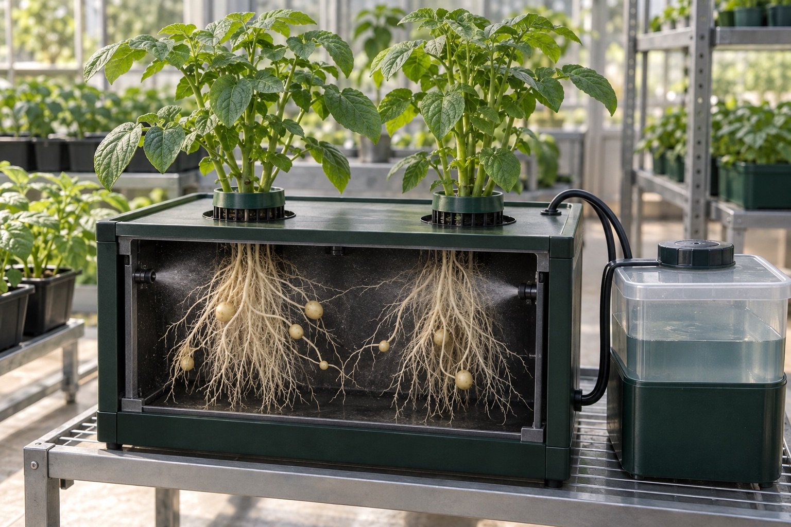

04 / Future agriculture
How aeroponics could change agriculture, and what must happen first
Aeroponics could contribute to specialized crop production, propagation and better-observed growing experiments. Its impact will depend on crop suitability, reliable operation, water and energy accounting, economics and reproducible evidence. It is more credible as a complementary tool than as a guaranteed replacement for agriculture as a whole.

The strongest starting point is a specific agricultural job
The useful future question is not whether plants can grow without soil. It is where a particular growing method solves a real production problem. A propagation nursery, a greenhouse producing fresh leaves and an indoor research cabinet have different goals and constraints.
Seed potato minituber production is one documented application of aeroponics. The International Potato Center’s technical manual discusses its use within a seed-production system. That is a concrete agricultural role, rather than a prediction that all potato or staple-food production will move into mist chambers. CIP’s manual.
A plausible expansion would begin with similarly specific jobs: observing roots, comparing treatments or producing a crop where the operating model makes sense. Those possibilities need testing for each crop and market.

Seed potato minituber propagation is one documented application. This concept illustration gives crop-specific context; it is not a report of Leafcoin production.
AI-generated concept illustrationWater efficiency needs a whole-system boundary
Aeroponics can offer useful control over where nutrient solution is delivered. A lettuce experiment comparing aeroponics and NFT found improved water-use efficiency for its selected aeroponic treatments. That outcome supports investigation of the technique, not an unconditional prediction for every future farm. El-Demerdash et al., 2026.
For adoption, measurements should include refill water, cleaning, discarded solution and losses, then relate those inputs to acceptable harvested output. A low-volume reservoir is not by itself proof of low water consumption. Nor does high crop yield alone demonstrate efficiency.
This accounting makes a future claim testable: name the comparison system, define what was measured, and explain which operations are included. A farm can then evaluate the benefit it needs instead of inheriting a percentage from someone else’s experiment.
A root-delivery method is not an energy strategy
Aeroponics and vertical farming are different choices. A greenhouse may use sunlight with an aeroponic root zone; a fully indoor installation may also need electric lighting and climate control. Their environmental impacts cannot be inferred from the root-delivery method alone.
A life cycle assessment of a commercial vertical farm identified electricity and cultivation substrate as important environmental hotspots, with results depending on the energy scenario. It was a vertical-farm case study, not a universal aeroponics comparison. Gargaro et al., 2024.
A credible future plan therefore asks about electricity per unit of saleable output, the energy supply, equipment lifetime, maintenance and wasted crops. Shorter delivery distance or lower water use may be useful, but they do not answer every environmental question.
Better records could make growing experiments more useful
A cultivation record can preserve what was attempted, how conditions changed and what happened to the crop. When measurements, recipe changes and observations use consistent units and timestamps, a later reviewer has a better chance of understanding the trial.
That is where IoT and ML might contribute. Sensors could reduce gaps in observation; models could help compare patterns across repeated cycles. The next question would be whether those tools improve decisions against a simpler baseline. More data is not automatically a better experiment.
Sharing useful methods would also require context: crop and cultivar, chamber layout, delivery equipment, measurement procedures and the chosen outcome. A recipe without that context may be difficult to transfer even if it worked in one installation.
Verifiable records need trustworthy measurements first
A digital fingerprint can help detect whether a published record has changed. It cannot, by itself, establish that a sensor was calibrated, an experiment was controlled or a harvest report was accurate. This is an engineering distinction between record integrity and the truth of the underlying observation.
In Leafcoin’s proposed architecture, raw telemetry would remain off-chain while report fingerprints could be recorded on a ledger. Besu with QBFT is being considered for a permissioned EVM network. Governance, access and confidentiality would need evaluation.
For an agricultural operator, useful records might ultimately support traceability and comparisons between growing cycles. The value would come from accurate evidence and practical decisions, with the digital layer serving that purpose.
What would make a future aeroponic project convincing?
A convincing project would demonstrate that a chosen crop can be grown repeatedly with an acceptable maintenance burden and a clear economic boundary. It would report unsuccessful cycles as well as successful ones, and separate measured outcomes from forecasts.
The following is a decision framework proposed by Leafcoin for evaluating future experiments, not a claim that those milestones have already been achieved.
- Crop fit: a clear production or research task and repeatable acceptable output.
- Reliability: tested interruption handling, maintainable equipment and an operating routine.
- Resource accounting: water, energy and materials measured across the crop cycle.
- Economics: labor, replacement parts, losses and saleable output included in the assessment.
- Evidence: documented methods, consistent observations and comparisons that others can inspect.
Explained visually
From a growing idea to a useful application
A conditional evaluation path. Measured outcomes and operating costs guide the next experiment; this is not a launch schedule.
Read the diagram as text
Check whether the crop and task suit the system, repeat growing cycles to examine reliability, account for water, energy, labor and losses, then review practical and economic feasibility. Revise and repeat when the evidence is insufficient.
- Check crop fit: Choose the crop and production task.
- Repeat growing cycles: Examine reliability and acceptable output.
- Account for inputs: Water, energy, labor maintenance and losses.
- Review feasibility: Evaluate practical fit and the economic case.
Evidence guides the next decision. Revise and repeat when needed.

A complementary future is still a meaningful one
Aeroponics does not have to replace every growing method to matter. A technique that is useful for a specific propagation process, a particular crop or a repeatable experiment can contribute to agriculture alongside soil cultivation and other hydroponic systems.
Leafcoin uses a historical home aeroponics lab as its starting point and proposes a wider research direction around calibration and verifiable records. Its roadmap is a research sequence, not a dated launch promise. The opportunity is to turn a growing idea into evidence that can be evaluated, one iteration at a time.
Common questions
Will aeroponics replace conventional farming?
A universal replacement is not established. The more defensible opportunity is adoption for suitable crops and tasks alongside existing growing methods.
Is indoor aeroponics automatically sustainable?
No. Water, electricity, equipment, cleaning, losses and the energy supply all affect the result. The growing location and root method need separate evaluation.
Can a blockchain prove that a crop was grown correctly?
A ledger can support checks on record integrity. It cannot verify the accuracy of a sensor or a cultivation claim without trustworthy underlying evidence.
Sources and scope
These are original research publications or institutional technical guidance. Experimental findings apply to the crop and conditions studied. Suggestions in this guide are an engineering synthesis; they are not presented as measured Leafcoin results.
- Manual on quality seed potato production using aeroponics
Víctor Otazú, International Potato Center, 2010. Institutional technical manual; potato-specific guidance.
- Aeroponic and NFT system optimization for lettuce: effects of flow rate and nutrient source on water use efficiency, growth, and profitability
El-Demerdash et al., 2026. Peer-reviewed experiment.
- A cradle-to-customer life cycle assessment case study of UK vertical farming
Gargaro, Hastings, Murphy and Harris, 2024. Peer-reviewed life cycle assessment; commercial vertical-farm case study.